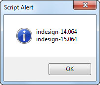

Get application version functions
alert(GetAppVersion());
function GetAppVersionName() {
var appPath = app.filePath.fsName,
tempArr = (File.fs == "Windows") ? appPath.split("\\") : appPath.split("/"),
appName = tempArr[tempArr.length - 1].replace(/^Adobe InDesign\s/, "").replace(/\s\(32-bit\)/, "").replace(/\s+/, " ");
return appName;
}
alert(GetAppVersionName());
function GetAppVersion() {
var appVersion,
appVersionNum = Number(String(app.version).split(".")[0]);
switch (appVersionNum) {
case 20:
appVersion = "2025";
break;
case 19:
appVersion = "2024";
break;
case 18:
appVersion = "2023";
break;
case 17:
appVersion = "2022";
break;
case 16:
appVersion = "2021";
break;
case 15:
appVersion = "2020";
break;
case 14:
appVersion = "CC 2019";
break;
case 13:
appVersion = "CC 2018";
break;
case 12:
appVersion = "CC 2017";
break;
case 11:
appVersion = "CC 2015";
break;
case 10:
appVersion = "CC 2014";
break;
case 9:
appVersion = "CC";
break;
case 8:
appVersion = "CS 6";
break;
case 7:
if (app.version.match(/^7\.5/) != null) {
appVersion = "CS 5.5";
}
else {
appVersion = "CS 5";
}
break;
case 6:
appVersion = "CS 4";
break;
case 5:
appVersion = "CS 3";
break;
case 4:
appVersion = "CS 2";
break;
case 3:
appVersion = "CS";
break;
default:
return null;
}
return appVersion;
}
To get all installed versions of InDesign, use the following code:
var allInDesignVersionsInstalled = [];
for (var n=0; n < apps.length; n++) {
if (apps[n].match(/^indesign/)) {
allInDesignVersionsInstalled[allInDesignVersionsInstalled.length++] = apps[n];
}
}
alert(allInDesignVersionsInstalled.join("\r"));
